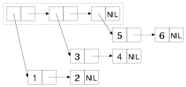
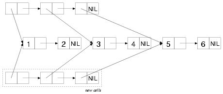
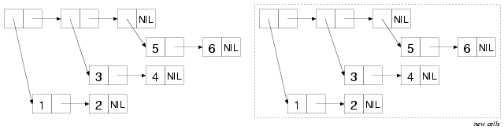
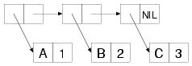
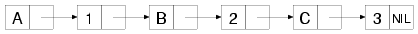

Practical Common Lisp笔记
文章目录
环境搭建
尝试了多种common lisp的实现，在windows下使用Lispbox时并不能使用slime。而gnu common lisp和ansi common lisp好像也不能在windows中与emacs 23和slime一起工作。结果发现只有gnu clisp的win32版本可以与win32 slime emacs23配合工作。emacs23的.emacs文件如下：
|
|
Introduction Why Lisp?
Lather, Rinse, Repeat: A Tour of the REPL
使用SLIME来编辑Lisp程序。
选择一个Lisp实现
与其它语言同Common Lisp是通过规范定义的不只有一个实现。
使用标准的Common Lisp可以获得较好的通用性，可以在不同的实现上运行。
某些Common Lisp实现针对特定的方面有所增强，可以根据需要来选择。
在不同的平台上可以选择不同的实现Franz开发的Allegro Common Lisp在Linux，Windows和OS X上都有试用版本。SBCL是一个高质量的开源实现，它可以在多种Unix系统，包括Linux和OS X上将代码编译为本机代码执行。SBCL是从CMUCL派生出来的，CMUCL是Carnegie Mellon University开发的。CMUCL自身也是另一个较好选择，SBCL易于安装，运行21-bit Unicode。对于OS X用户，OpenMCL是一个优秀的选择——它编译为本机代码，支持线程，并且与OS X的Carbon和Cocoa工具包集成得很好。
书中所有代码应该都能运行于任何Common Lisp实现，SLIME也将消除不同实现间的差异以提供一个公共的Lisp界面。书中的例子的输出来自于运行在GNU/Linux上的Allegro；某些情况可能会产生一些不同的的错误或调试信息。
Lisp in a Box
Lisp in a Box包用于提供给初学者使用。它使用Emacs作为编辑器。
在SLIME中可以使用C-c C-z切换到与Lisp解释器交互的缓冲区。
交互式的编程
REPL是read-eval-print loop的简写。
Lisp风格的"Hello, World"
|
|
Lisp读取双引号中的字符串，求值时它显示同样的格式的字符串。
|
|
FORMAT可带多个参数，但只有两个是必须的，分别是发送的目标和一个字符串。NIL表示FORMAT的返回值。
|
|
DEFUN后的hello-world是函数名称。Common Lisp中符号名称使用-是合法的。
保存代码
SLIME REPL中可以使用C-c C-l调用slime-load-file，或者在REPL中用(load “file.lisp”)加载文件中的代码。C-c C-z在SLIME中切换到REPL中。
|
|
加载文件之前也可以使用COMPILE-FILE将文件转换为FASL（fast-load file的简称）文件，例如：
|
|
但这种方式并不一定会加快加载的速度，因为有些Common Lisp实现总是会自动编译文件。可以在SLIME中输入C-c C-k将当前缓冲区对应的文件编译为FASL文件将重新加载。
在修改的函数上按C-c C-c重新编译函数定义将会立即反应到REPL中。
实践：一个简单的数据库
本章将逐渐创建一个CD数据库。
CD和记录集
为保存单张CD记录我们需要将它描述为一条数据库记录。Common Lisp提供了许多保存结构化数据的选择。
使用LIST函数创建一个list。
|
|
另一种list叫作property list，简称为plist。用plist保存CD记录更合适一些。plist中的元素以一个symbol开头，这个symbol描述了list中的下一个元素（这里不讨论什么是symbol，根本上来说它是一个名称）。使用symbol来以CD数据库中的字段命名，这里可以使用一种特殊的symbol，这种symbol被称为keyword symbol。keyword是以冒号开头的名称，例如，:foo。下面是一个以keyword symbol作为plist的property name的list：
|
|
创建plist时也是使用LIST函数。
使得plist更适合于描述数据库记录的是GETF函数，这个函数接收一个plist和symbol，返回plist中这个symbol后面值，这使得plist像类种贫血的hash table。Lisp有真正hash table，但是plist在这里已经够用了并且它易于保存于文件中。
|
|
现在可以编写一个函数make-cd来接收四个参数并返回一个plist来描述CD了。
|
|
DEFUN关键字告诉我们这个form正在定义一个新的函数。函数名是make-cd。函数名后是参数列表。这个函数有四个参数。参数列表后面函数体。这个函数的使用：
|
|
整理CD
单个记录还不能构成数据库。因此需要一些大型的结构来保存记录集。list看起来仍然是不错的选择。这里使用DEFVAR宏定义全局变量db。星号在Lisp命名约定中表示全局变量。
|
|
使用PUSH宏向db中添加项。
|
|
现在可以结合使用add-record和make-cd来将CD添加到数据库。
|
|
在REPL中将显示每次添加新记录后的返回值。
查看数据库内容
虽然可以在REPL中输入db查看db的值。
|
|
但更好的办法是写一个dump-db函数以便于阅读的格式显示出数据库：
|
|
函数如下：
|
|
这个函数使用DOLIST宏遍历db中的元素，将每个元素依次绑定到变量cd。并使用FORMAT函数打印cd。
FORMAT接收至少两个参数，第一个是它要输出的流；t是standard-output的简写形式。
第二个参数是一个格式字符串，它包含纯文本和告诉FORMAT函数如何显示其它参数的转义字符。转义字符以~开头（与printf中的%类似）。FORMAT函数有许多的转义字符。在这里只了解编写dump-db需要的转义符。
~a是一个美化转义符；它消耗掉一个参数并将它以便于阅读的形式输出。这将使输出不包含:和引号。例如：
|
|
或
|
|
~t转义符表示缩进。~10t告诉FORMAT在处理下一个~a前缩进足够的空间到第10列。另外，~t不消耗任何参数。
|
|
当FORMAT遇到~{时下个被消耗的参数必须是一个list。FORMAT将遍历这个list，以~{和~}间的转义符处理list中的每个元素。~%转义符不消耗任何参数但它使得FORMAT进行换行。~}之前的那个~%在输出数据库的一个字段后换行。~}之后的那个~%在输出一条记录后换行。
技术上来说，可以让FORMAT自己来遍历数据库，将dump-db函数写为一行。
|
|
非常cool。
改进用户交互
在用户需要添加很多记录时将需要提示帮助用户录入CD。因此需要一些提示用户输入并读入输出的方法。
|
|
使用FORMAT提示输入。调用FORCE-OUTPUT确保提示显示出来。
使用READ-LINE函数读取单行文本。query-io是一个全局变量，它包含连接的终端的输入。prompt-read的返回值是最后一个form的值，READ-LINE返回读取的字符串（不包含换行符）。
可以结合make-cd和prompt-read构建一个函数根据输入来构建一个新的CD记录。
|
|
这里有两个问题，Rating和Ripped字符，应该分别是number和boolean型。在这里我们只简单的处理一下：以PARSE-INTEGER函数处理rating：
|
|
PARSE-INTEGER在将字符串解析为integer失败时出错。它有一个可选参数:junk-allowed，它不会出错。
|
|
但仍然有一个问题：如果它不仍不能解析，PARSE-INTEGER将返回NIL而不是一个number。在这里我们简单的将它处理为0并继续执行程序。Lisp的OR宏可以处理个，这接受一连串的表达式，依次执行表达式，并返回第一个non-nil值（或NIL，如果它们全为NIL）。因此你可以使用下面的表达式：
|
|
设置默认值为0。
修正Ripped则简单一些。可以使用Common Lisp函数Y-OR-N-P。
|
|
实际上，这将是prompt-for-cd中最健壮的部分，如果用户的输入是心y，Y，n或N开头Y-OR-N-P将一直提示用户。
完整的prompt-for-cd函数：
|
|
最后，可以用循环将prompt-for-cd函数包装起来，反复提示用户录入CD。这可以通过使用LOOP宏，它重复执行它的body表达式，直到它使用RETURN退出。例如：
|
|
现在可以使用add-cds添加更多的CD到数据库了。
|
|
保存和装载数据库
保存数据库save-db函数接收一个文件名作为参数并保存当前的数据库：
|
|
WITH-OPEN-FILE宏打开一个文件，将流绑定到一个变量，执行一组表达式，并关闭文件。它将确保文件被关闭，即使在执行它的body过程中出现了错误。WITH-OPEN-FILE后面list不是一个函数调用而是WITH-OPEN-FILE定义的语法的一部分。它包含了保存文件流的变量名，它用于在WITH-OPEN-FILE的body中进行写入操作；还有文件名和一些控制如何打开文件的选项。比如用于指定以写入方式打开文件的选项:direction :output和用于覆盖已经存在的文件的选项:if-exists :supersede。
打开文件后，只需使用(print *db* out)要将内容print到数据库。与FORMAT不同的是PRINT输出的Lisp对象可以被Lisp reader读取为Lisp对象。宏WITH-STANDARD-IO-SYNTAX确保某些变量的值，这使得PRINT的行为表现为标准的状态。在将数据读取回来时为保证Lisp reader和printer的操作的兼容将需要使用相同的宏。
save-db的参数是一个包含了要保存数据库的文件名。例：
|
|
读取数据库的函数与写入的函数是相类似的。
|
|
这里在没有在WITH-OPEN-FILE中指定:direction选项，因为它的默认值就是:input。这里的READ函数用于从流in中读取。这个reader与REPL中使用的reader是相同的可以读取任何能在REPL中使用的Lisp表达式。但是在这个函数里只是读取和保存表达式，并没有对它求值。通过使用WITH-STANDARD-IO-SYNTAX宏确保了READ使用与save-db中的PRINT相同的规则来读取。
SETF宏是Common Lisp中主要的赋值操作符。它设置它的第一个参数为第二个参数的求值结果。因此，load-db的*db*变量将包含从文件中读取的对象，即由save-db写入的由list构成的多个list。
查询数据库
在有了用于添加数据的UI界面和保存、装载数据的功能后。你将需要一个查询数据库的方法。例如
|
|
可以获取artist为Dixie Chicks的记录的list。
函数REMOVE-IF-NOT以predicate和list为参数返回list中与predicate匹配的元素的list。REMOVE-IF-NOT并不从list中删除元素而是创建一个新的list，原始的list并不会被改变。predicate参数可以是任何接收单个参数并返回boolean值（NIL为false，其它值为true）的函数。
例如，提取list中的偶数元素：
|
|
在这里predicate是函数EVENP，如果它的参数为偶数则返回true。#‘标记的含义是“获取后面名称的函数”。如果没有#'，Lisp会将evenp变量名并查找这个变量的值，而不会把evenp函数。
另外，也可以向REMOVE-IF-NOT函数传递匿名函数。比如，如果EVENP不存在，你可以将前面的表达式修改为：
|
|
LAMBDA表达式看起来有点像一个DEFUN语句：关键字lambda后面跟参数列表，然后是函数体。
为了使用REMOVE-IF-NOT函数从数据库中查找记录，还需要一个函数来检查记录的artist字段是否为“Dixie Chicks”。我们可以使用GETF从plist中获取特定的字段。使用EQUAL检查字符串是否相等。因此，(equal (getf cd :artist) "Dixie Chicks")可以测试CD的artist字段是否为“Dixie Chicks”。现在只需要将这个表达式封装为lambda表达式并传递给REMOVE-IF-NOT。
|
|
将整个表达式封装到函数中，这个函数只需要artist参数：
|
|
注意匿名函数，它包含的代码只有在REMOVE-IF-NOT中被调用时才会运行，它能够访问artist变量。在这里，匿名函数不仅使得避免了编写正式的函数，也使得你编写的函数只在它所嵌入的上下文中才有含义。
现在select-by-artist已经完成了。但通过artist查询只是你需要的查询方式中的一种。可以编写select-by-title，select-by-rating，select-by-title-and-artis，等等。但它们除了匿名函数外基本是相同的。我们可以写一个更通用的以一个函数为参数的select函数。
|
|
这里不需要#'。因为这里的REMOVE-IF-NOT需要使用selector-fn函数。这里需要使用匿名函数作为参数。因此，#‘重新出现在对select的调用中。
|
|
这看起来仍然不美观。我们可以将匿名函数的创建封装起来。
|
|
这个函数返回一个指向函数的变量。对于不同的artist参数这个函数将返回不同的函数来匹配不同的artist。
|
|
现在我们需要更多的函数来生成选择器函数。但这又将导致重复代码的产生，并且它们不能处理组合查询条件。我们需要一个函数根据字段或多个字段生成选择器函数。为实现这个目标，我们需要先了解keyword parameter。
通常的函数结构如下：
|
|
它包含了一个参数列表。有时我们需要编写的函数支持可变数量的参数。Keyword parameter就是用于这个目的的。例：
|
|
与上一个例子不同之处在于&key。但是，在调用方式上却有些不同。
|
|
在面的代码中，传了值的将被绑定到对应的参数上，未传递的值为NIL。为了区分NIL值是传递过来的参数值还是由于没有传递参数而产生的默认NIL值，我们可以使用另一个称为supplied-p的参数。根据keyword parameter是否显式的传递了参数，suupplied-p参数将被设置为true或false。例：
|
|
|
|
回到上面通用选择器函数生成器的问题，我们可以像使用SQL数据库一样来使用select：
|
|
或
|
|
函数如下：
|
|
更新数据库记录——再次使用WHERE
更新函数的原理：使用传入的选择器函数选出需要修改的数据库记录并使用keyword arguments指定要修改的值。主要不同的一点在于使用MAPCAR来操作list，并返回一个新的包含调用结构的list。
|
|
这里另一个不同之处在于将SETF用于了一个复杂的form，如(getf row :title)。后面将详细讨论SETF，这里只需要知道它是一个通用赋值操作符可以用于很多情况而不只是变量。这里在执行(setf (getf row :title) title)后，row变量保存的plist的:title属性值将被设置为title变量的值。
更新函数的使用：
|
|
我们甚至可以为数据库添加一个简单的delete函数。
|
|
REMOVE-IF与REMOVE-IF-NOT相反；它返回的list中，在原始list中与selector-fn匹配的元素已经被删除了。
移除重复代码获取更大胜利
到现在数据库已经支持insert，select，update和delete，并且还有一个用户界面供添加新记录，支持保存到文件和从文件加载。
但是仍然存在一些重复代码。重复代码存在于where函数中。where函数中对每个字段都编写了类似的代码：
|
|
如果我们改变CD的字段，就需要添加或删除where条件。update中也存在着类似的重复。
如果我们需要优化代码想像一下每次都检查title或其它keyword parameter是否存在是否会消耗过多的资源？你需要返回的匿名函数只执行必须的计算。例如，下面的代码：
|
|
应该修改为：
|
|
但这里仍然只能针对特定查询。
使用Lisp的macro系统能轻松的满足上面的要求。Lisp中的macro与C/C++中的macro只是使用了相同的名称其本质是不同的。C预处理器根据文本进行替换，对于C/C++结构并不了解。Lisp macro本质上是一个代码生成器，由编译自动为你运行。当Lisp表达式包含了一个macro调用时，Lisp不会对表达式求值并将它传递函数。Lisp编译器将传递未求值的参数给macro代码，它将返回新的Lisp表达式，然后在macro被调用的地方被求值。
为了编写一个简单的macro示例，需要先介绍一个新函数：REVERSE它接收list为参数并返回一个新的逆序的list。(reverse ‘(1 2 3))求值为(3 2 1)。现在定义一个macro：
|
|
语法上来看函数和宏的定义区别在于DEFMACRO和DEFUN，后面的名称、参数列表、body表达式都与函数类似。但宏与函数是完全不同的。
|
|
上面的macro是如何工作的呢？当REPL开始对backwards语句求值时，它识别出backwards是一个宏的名字。因此它不对表达式(“hello, world” t format)求值，这很好因为它不是一个合法Lisp form。然后它将这个list传到backwards的代码中。backwards中的代码将这个list传递给REVERSE函数，它返回新的list (format t “hello, world”)。backwards将这个值返回给REPL，然后它被进行求值。
backwards macro定义了一个新的语言它与Lisp类似只是逆序的。对于一个已经编译过的Lisp程序，这个新语言效率上与原始的Lisp同样有效因为所有的macro代码——用于生成新表达式的代码——在编译时被执行。换言之，编译器将对(backwards (“hello, world” t format))和(format t “hello, world”)生成相同的代码。
在数据库示例的选择器函数生成器中。我们可以编写macro来根据特殊的参数生成所需要的函数。我们手工针对某个字段的优化代码如下：
|
|
我们可以编写一个函数，给定字段名和值，返回类似上面的表达式：
|
|
这里有一个问题：Lisp遇到某个名称，比如field或value它不会将它们作为list中的第一个元素，它会认为它是一个变量名并查找它的值。这对于field和value不会有问题。但是你应该知道如何阻止Lisp进行求值：在名称前添加单引号（'）。因些，如下编写make-comparison-expr将是需要的结果：
|
|
有一个更好的方法来完成上面的函数。使用反单引号（`）使得列表中只有少数表达式被求值。
|
|
通过在前面添加逗号（,）对表达式进行求值。
|
|
使用反单引号可以将make-comparison-expr编写为：
|
|
前面的手工编写的选择器函数使用AND表达式将多个field/value封装。在这里可以将参数组织为where macro的一个参数，这个参数只是一个list。我们还需要一个函数从list中获取成对的参数并在每对参数上调用make-comparison-expr。为了实现个功能，我们可以使用LOOP macro。
|
|
后面将详细讨论LOOP。这里只需要知道：如果list中还有元素它将一直循环，在每个周期中将popping两将并将值传递给make-comparison-expr，将结果收集起来直到循环结束后作为返回值。POP macro执行与PUSH macro相反的操作。
现在只需要将make-comparison-list的结果用AND封装到匿名函数中，这可以在where macro中定义。
|
|
在调用make-comparisons-list前使用了逗号（,）的一个变种“接合”（,@）。它将一个list连接到外部的list中。
|
|
where macro上另一个重要的功能是在参数列表中使用了&rest。与&key类似&rest将修改参数的解析方式。通过在参数列表中使用&rest，函数或宏可以接收任意数量的参数，这些参数被收集到一个list中，它被命名为&rest后面名称。例如：
|
|
产生的变量将包含下面的list。
|
|
这个list被传递到make-comparisons-list中，它返回包含比较表达式的list。可以使用函数MACROEXPAND-1来查看将产生什么样的调用。如果传递给MACROEXPAND-1的form是macro，它将使用适当的参数调用macro代码并返回展开的表达式。例如：
|
|
语法和语义
关于括号
历史原因：当John McCarthy首次发明Lisp时，他正致力于实现个更Algol-like的语法，他称之为M-expression。但是，他从来就没有达成。
Lisp使用这种语法已经超过45年了你将发现它的强大之处。
黑盒子
计算机语言处理器——解释器或编译器的操作都像一个黑盒。其中有一个子系统将程序转换为abstract syntax tree然后将语法树进行解释或编译。由于语言处理器是一个黑盒，通常只有语言的实现者才感兴趣。
而Common Lisp定义了两个黑盒，一个负责将文本转换为Lisp对象，另一个处理这些对象的语义。第一个黑盒称为reader，第二个称为evaluator。
定义字符串如何被解释为Lisp对象的是s-expression语法，它与非Lisp语言的解析器（parser）生成的抽像语法树类似，可以描述任意的树状表达式。
Lisp reader懂得s-expression的语法而Lisp evaluator懂得Lisp forms的语法。
S-expressions
由lists和atoms构成。List由括号分隔可以包含任意数量的以空白分隔的元素。Atoms是除list之外的任何东西。Lists的元素也是s-expressions（atoms或lists）。注释以分号开头直至行尾。
最常用的几种atoms：数字、字符串和名字。
-
数字：以+或-号开头，包含.或/，或以指数标识结尾的数字序列被读取为数字。
-
字符串：以双引号包含。内部可以有以\开头的转义字符。
-
名字：在Lisp程序中用于标识对象的符号。比如FORMAT、hello-world、db等等。在读取名字时，reader将所有字符转换为大写。
为保证名字的唯一性，reader在读取名字并将它转为大写后将interns符号，reader从被称为package的table中查找是否存在同名的符号。如果未找到它就创建一个符，否则它将返回table中已经存在的符号。
S-expression作为Lisp Forms
最简单的Lisp forms是atoms，可以被分为两类：符号或其它。符号作为form被求值时它被当作变量名称并被求值为变量的当前值。
数字和字符串被作为self-evaluating objects。
符号本身也可以是self-evaluating的，它们的名字可以被赋给符号自身。
另一类self-evaluating符号是keyword symbols——以:开头的符号。
函数调用
函数调用forms的规则很简单：将list的剩余的元素作为Lisp forms进行求值并将结果传递给函数。
特殊操作符
当list中的第一个元素是一个特殊操作符时，表达式中的其它元素的求值是按这个操作符的规定来进行求值的。
宏
宏是一个接收s-expression作为参数并返回Lisp form然后对form求值的函数。求值过程分为两个阶段：
-
macro的form不会被求值。
-
macro函数返回的form（称为macro的expansion）将被按普通的求值规则被求值。
真值、假值和相等性
符号NIL是唯一的假值，其它为真值。符号T是经典的真值表示，用于需要返回non-NIL值时使用它。
NIL的可以用nil,(),‘nil,'()来表示。
对t和’t求值都将得到符号T。
当使用“相同”这个词时它表示两个值是“同样的”（注：同一个东东）。
四个常用的测试相等性的函数：
-
EQ测试两个对象的“对象标识（object identity）”是否相等，对象标识的值有可能为数字或字符，这取决于你使用的Lisp实现。因此不应该使用EQ来比较可能是number或character的值。
-
EQL的行为类似EQ但它会对比参数是否为同样的类型并表达同样的值。比如，(eql 1 1)为true，而(eql 1 1.0)为false，因为1.0为浮点类型，1为整型属于不同类的实例。
-
EQUAL的识别宽松一些，如果被比较的对象有相同的递归结构和内容则是相等的。EQUAL将包含相同字符的字符串当作相等。对于其它类型的对象，它将使用EQL的行为。
-
EQUALP比EQUAL的识别更宽松一些。它在比较字符串时将忽略大小写。比较数字时，只需要它们表述的数学值是相同的即可。因此，(equalp 1 1.0)为true。对于List和Array将使用EQUALP测试其中的元素。对于其它数据类型EQUALP将使用EQL。
Lisp代码的格式
在SLIME中将光标停留在左括号上输入C-M-q，或在函数体的任意位置输入C-c M-q可以格式化整段代码。
函数
定义新函数
使用DEFUN宏来定义函数。DEFUN的基本框架如下：
|
|
任何符号都可以作为函数名称。通常函数名只包括字母和连字符，其它字符允许在某些约定命名情况下出现。例如，将一个类型的值转换为另一类型通常使用->。
如果函数没有参数则使用空列表()。参数关键字有reqiured，optional，multiple和keyword。
参数列表后面的字符串被作为文档字符串，它用于说明函数。函数定义后可以使用DOCUMENTATION函数来访问文档字符串。
DEFUN的body部分可以包含任意数量的Lisp表达式。最后一个表达式的值作为函数返回值。或使用RETURN-FROM操作符立即返回。
函数参数列表
使用&optional定义可选参数列表，下面的函数可以接收2-4个参数。
|
|
未传递参数时可选参数为Nil。
可以指定可选参数的默认值和传值标识。下面的函数中参数c的默认值为3，可以使用c-supplied-p来检查是否传递了c参数。
|
|
使用&rest定义可变长度参数。例如：
|
|
使用&key定义关键字参数。
|
|
调用时使用符号指定要设置的参数：
|
|
关键字参数也可以指定默认值和设置supplied-p变量：
|
|
组合使用不同类型的参数时要按顺序来声明：首先是必须的参数，然后是可选参数，再接下来是可变长度的参数，最后使用关键字参数。通常会使用必须参数与其它参数类型组合，或者组合使用可选参数和可变长度参数。可选参数或可变长度参数与关键字参数组合使用时可能会引起奇怪的行为。例如：
|
|
可以这样调用它：
|
|
这样调用也行：
|
|
但这样调用时就会出错
|
|
如果要组合使用可选参数和关键字参数时，应该转变为只使用关键字参数。
可以安全的组合使用可变参数和关键字参数，但也仍然会导致奇怪的问题。参数既会被当作可变参数也会被作为关键字参数
|
|
函数返回值
所有函数都将最后一个表达式的值作为函数值。
需要在函数中间就返回则要使用RETURN-FROM操作符来立即从函数中返回值。
RETURN-FROM其实与函数并没有任何联系；它是用于从操作符BLOCK定义的代码块返回的。但是，由于DEFUN会自动将整个函数体包裹为与函数名同名的代码块。因此，在函数中执行RETURN-FROM也将会导致函数立即退出并返回值。RETURN-FROM是一个特殊操作符，它的第一个“参数”是要返回的块名。这个名称不会被求值不需要使用引号。
使用RETURN_FROM时的第一个参数为要返回的块名，如果修改了函数名称要记得修改这个参数。在Lisp中使用RETURN_FROM的情况并不多见。
函数作为数据，也称为高阶函数
当在Lisp中使用DEFUN定义函数时实际上做了两件事：用给定的名称创建了一个函数对象。也可以使用LAMBDA表达式创建没有名称的函数对象。函数对象实际表述为编译后的代码，通常为机器码。一旦得到它只需要知道如何引用它和调用它。
FUNCTION操作符提供了获取函数对象的机制。它接收函数名作为参数并返回对应的函数对象。名称前不加引号。它可以被写作#'，与QUOTE写作'写法类似。
得到函数对象后有两个函数可以用来调用函数对象：FUNCALL和APPLY。它们的区别在于：
FUNCALL是用于你要调用的函数的参数个数的情况下。它的第一个参数是要被调用的函数对象，其它参数被传递到函数中。
APPLY的第一个参数是函数对象。函数对象后面的参数不是调用这个函数的参数而是一个包含参数的list。APPLY并不关心参数是可选参数、可变参数或关键字参数，组合参数到list中的元素必须是调用函数对象的合法参数。（通常只适用于关键字参数。）F
匿名函数
LAMBDA表达式。
变量
Common Lisp支持两种类型的变量：lexical和dynamic。这两种类型大体类似于其它语言中的“local”和“global”变量。但仅仅是大体类似。
变量基础知识
Common Lisp中变量类型是运行期检查的。变量可以带任何类型的数据，变量的值带有类型信息。Common Lisp是强类型语言，它将检查所有类型错误。
Common Lisp中所有的值从概念上恶报是对象的引用。因此，对一个变量赋新值不会修改变量之前所引用的对象。但是，如果变量持有一个可变对象（mutable）的引用，则可以通过这个引用修改对象，修改将反应到所有引用了相同对象的代码中。
定义新变量的其中一种方法就是定义函数参数。
每次函数调用时，Lisp创建新的绑定来保存从调用者传递过来的参数。绑定是变量在运行时的表象。一个变量在程序运行中可以有许多不同的绑定。单个变量在同一时刻也可以用多个绑定；例如递归调用的参数，在每次函数调用时将被重新绑定。
通过变量，函数参数保持对象的引用。因此，你可以在函数体中给函数参数重新赋值，这不会影响另一个对这个函数的调用的绑定。但是如果传递给函数的对象是可变对象，并在函数中修改了这个对象，则修改将会对调用者可见，因为调用者和被调用者引用了同一个对象。
另一个定义新变量的方法是LET操作符。
当LET被求值时，所有初始值被先求值。新的绑定被创建并在body部分为执行前被初始化。在LET的body部分中，变量名指向新创建的绑定。在LET语句之后，这个名称指向其它东西，如果它存在则它指向LET语句之前所指向的东西。
LET语句的body部分的最后一个表达式被作为LET语句的返回值。与函数参数类似，变量在进入LET时被引入，在每次进入LET时重新绑定。
两种类型的变量lexical和dynamic变量作用范围有不同的作用范围机制，但是这两种情况下都是由绑定 form来限定的。
同名变量的嵌套引用时，内部的变量将屏蔽掉外部的绑定。例：
|
|
另一个创建绑定的方式是LET*。后面定义的变量可以引用前面定义的变量的值。
|
|
Lexical变量和闭包
通常所有绑定都是lexically scoped变量。与C,Java中的local变量类似。
Common Lisp的lexical变量存在一个不寻常的特点。在嵌套的函数和lexcial变量组合使用时将出现这个问题。通常lexical范围的变量，只存在于代码文本中绑定变量的范围才可以引用该变量。但当一个匿名函数在一个封闭范围内包含了lexical变量的引用时将发生什么呢？例如：
|
|
LAMBDA表达式内的count是lexical作用域的变量。但是匿名函数包含了对它的引用，匿名函数将作为let的返回值并能通过FUNCALL调用，能被那些不属于LET范围之内的代码调用。这个代码仍然能正常工作。count的绑定将在进入LET语句时被创建并将在需要它的期间一直存在下去。这种匿名函数被称为闭包，因为它“封闭（closes over）”了由LET创建的绑定。
考虑闭包时要将它作为绑定来思考，不能把它当作变量。因为，闭包不仅仅能访问它封闭的变量的值也可以在不同的闭包调用时给变量赋新值，这个新值将能在不同的调用间被保留。例如：
|
|
单个闭包通过引用变量可以封闭任意数量的变量绑定。多个闭包也可以共享相同的绑定。例如，下面的let返回的是一个闭包的列表，它们都引用了count的绑定：
|
|
动态变量，也称特殊变量
Common Lisp中创建全局变量的两个方法：DEFVAR和DEFPARAMETER。两个表达式都接收一个变量名和一个初始值，还有一个可选的字符串参数作为文档字符串。在使用DEFVAR和DEFPARAMETER后，全局变量的绑定可以在任何地方被使用。全局变量以*开头和结尾。
|
|
这两个定义方法的区别在于DEFPARAMETER在执行时总是会重新给变量赋值。DEFVAR只会在变量不存在时给它赋初值。DEFVAR也可以在定义全局变量时不赋初始值。这种变量被称为“未绑定（unbound）”。
全局变量的好处是不需要传递它们。多数语言都将标准输入和输出流作为全局变量。但是类似标准输出流这样的全局变量有时会需要通过修改这个变量来修改它们的行为。比如日志工具将它重定向到文件。有时在重定向到文件后时可能会忘记将它们重新定向到标准输出。
解决这种问题的方法是使用动态变量。当你使用LET或函数参数绑定动态变量时，绑定将在进入绑定生存范围的时候被创建，这个绑定将在生存范围内替换全局绑定。这与Lexical绑定不同，它只在绑定生存周期内才能被引用，动态绑定可以任何代码的执行过程中被引用。所有全局变量都是动态变量。
因此，你可以临时性的重新定义*standard-output*，只需要使用LET重新绑定它。
|
|
调用stuff作为结果的任何代码在引用*standard-output*时都将使用LET建立的绑定。当stuff返回执行过程离开LET范围时，*standard-output*的绑定将被取消，随后的代码将看到执行LET之前的那个指向*standard-output*的绑定。在任何时候，最近建立的绑定将屏蔽（shadows）掉之前的绑定。从概念上看，为动态变量创建的新绑定被压入那个变量对应的绑定堆栈中，引用那个变量时总是使用最近的绑定。当绑定范围结束时，前一个绑定再被弹出堆栈，如此继续。例如：
|
|
LET是如何知道绑定*x*是一个动态绑定的呢？这是因为在申明*x*是使用的是DEFVAR和DEFPARAMETER，它们会自动将变量申明为全局特殊变量。在任何时候在LET中或在函数参数中使用此变量的时候都将构造一个新的动态绑定。这也是为什么使用*标识全局变量这个约定的非常重要的原因。
也可以申明本地特殊变量。在binding form中，申明一个特殊变量，则将创建一个动态绑定的变量而不是lexical变量。其它代码可以在本地变量范围中申明一个特殊变量以便引用动态绑定。但是，本地特殊变量非常稀有，你不必考虑它们。
动态绑定使得全局变量更加易于管理，绑定全局变量考虑它可能的两个影响：它将改变下游代码的行为，也可能出现下游代码给绑定赋新值断开了现有的绑定行为。只应该在需要的地方使用上面的这些特性。
常量
所有常量都是全局的，使用DEFCONSTANT定义。它的使用与DEFPARAMETER类似：
|
|
通常使用变量前后加+作为全局变量的命名。另一种方式是使用前后添加*-。
Lisp允许通过重新执行DEFCONSTANT并设置不同的初始值。, what exactly happens after the redefinition isn’t defined。实际上，多数Lisp实现将会需要你重新对引用了这个常量的代码重新求值，以便应用新值，因为旧代码可能内联了旧的值。因此，最好只在真正的常量才使用DEFCONSTANT，例如NIL。
赋值
创建绑定后，你可以对它做两件事：得到当前值和给它设置一个新值。对符号求值时将得到符号对应的名字所指向的变量的值，因此你可以通过引用变量得到它的值。给绑定赋新值可以使用SETF宏，它是Common Lisp中的通用赋值操作符。
|
|
SETF是一个宏，它将被展开为低级操作，转变为对特殊操作符SETQ的调用，它可以操作lexical和动态绑定。
前面讲过，给绑定赋新值不会影响其它绑定的值。例如；
|
|
将打印出20，而不是10。
SETF可以给多个变量赋值。
|
|
SETF将返回最后的赋值，因此可以嵌套使用SETF。
|
|
x和y将是同样的随机数值。
通用赋值
SETF可以对“SETFable places”的地方进行赋值操作，比如数组、变量、哈希表等等，甚至可以扩展SETF来允许它对用户定义的地方进行赋值操作，这里不作介绍。
SETF的第一个参数是要赋值的位置，第二个参数是值。
|
|
注意：SETF设置一个大对象的某个部分时不会影响到之前这个地方所存储的对象。这点上与Java，Perl和Python中的=是相似的。
其它修改方式
通过INCF和DECF之类的modify macros来修改变量。使用这种宏不但看起来更加简明。并且，modify macros能安全的用于只允许对表达式进行一次求值的地方。例如：
|
|
转换为SETF表达式如下：
|
|
但这两者是不同的，因为后者将会对RANDOM调用两次，这将返回不同的值。而INCF展开后将类似：
|
|
通常，modify macros将会对它的每个参数按从左至右的顺序求值一次。
PUSH宏也是一个modify macro。
两个神秘但非常有用的modify macro ROTATEF和SHIFTF。ROTATEF交换两个位置的值。例如：
|
|
交换两个变量并返回NIL。由于a和b都是变量因此不需要担心side effects，前面的ROTATEF表达式类似：
|
|
SHIFTF与之类似，但它不是交换，而是向左移动变量的值，下面的表达式：
|
|
类似
|
|
ROTATEF和SHIFTF都可以用于任意数量的变量，与所有modify macros一样，都只对这些参数按从左至右的顺序求值一次。
宏：标准控制结构
通常高级语言在实现的时候总是采用一个很小的核心加标准库的方式来实现，这样比较易于学习和实现。人们通过编写新程序库或新类来扩展出自己的程序。
Common Lisp也支持这些扩展方式，宏给Common Lisp提供了另一种扩展方式。前面讨论过每个宏都定义自己的语法，决定如何将s-expression转换为Lisp forms。通过macro我们可以构建新的类似WHEN，DOLIST和LOOP这样的控制结构，或者DEFUN和DEFPARAMETER这样的定义语句。这也是这门语言自己的实现方式。Lisp程序员通常更关心它提供了另一种方法来扩展这门语言，以便更好的解决编程中的特殊问题。
WHEN和UNLESS
if是一个特殊的操作符，基本语法如下：
|
|
condition将被求值，如果它的值是非NIL值，则then-form将求值并作为结果返回。否则，如果else-form存在，则它将被求值并作为结果返回。
IF只支持执行单个语句。在需要执行多个语句时不得不使用另一个操作符PROGN。
|
|
Lisp提供了标准宏WHEN来执行这种任务：
|
|
如果它不存在于标准库中，你也可以自己来定义WHEN:
|
|
与WHEN宏相对的是UNLESS宏，它只在条件为非真时才执行：
|
|
上面简单的例子包含了一个重要的内容：由于macro系统是构建于语言中的，因此你可以编写WHEN和UNLESS这样的宏来节约你的时间。
COND
另一种难看的使用IF表达式的情况是在多重选择的情况下：
|
|
如果需要执行更多语句可能还需要使用PROGN等等。因此，Common Lisp提供了COND宏。
|
|
每个情况下的分支上的元素可以包含零个或多个form，它们将在分支被选择的情况下被执行。所有的条件判断将按顺序被执行直到遇到一个为true的条件，这个分支上的语句将被执行，最后一个form的值作为整个COND的返回值。如果这个分支上的条件后面没有form，则将返回条件的值。习惯上将最后一个条件写为T，任何非NIL值都能工作，但T更能表明它的分界作用。因此可以将开头的IF表达式写为：
|
|
AND，OR和NOT
NOT不是宏而是一个操作符，它与AND和OR关系密切才放到这里来介绍。它接收单个参数并反转它的真假值，如果参数为NIL则返回T，否则返回NIL。
AND和OR都是宏。它们实现了对任意数量的form的和逻辑与和或，由于它们是通过宏定义的，因此它们可以实现“短路”操作。它们按从左至右的顺序依次执行。当AND遇到某个form的求值结果为NIL时它返回NIL。如果所有form都返回非NIL值，则它返回最后一个form的值。对于OR它将在遇到第一个非NIL值时返回这个form的值。如果没有哪个form的返回值为真，则OR将返回NIL。
循环
Lisp中的25个特殊操作符都不直接支持循环结构。所有的循环控制结构都是基于两个特殊操作符（TAGBODY和GO）通过宏构造出来的。
DO使用特殊操作符提供了基本的循环结构，DOLIST和DOTIMES提供两个易于使用的通用型的循环结构。当DOLIST和DOTIMES不够用时，你可以通过DO来定义自己的循环结构。
LOOP宏提供了易于使用的English-like（或Algol-like）的non-Lispy的循环结构。
DOLIST和DOTIMES
DOLIST遍历list中的元素，并执行body中的语句。下面是它的基本结构（去掉了一些神秘选项）：
|
|
|
|
通过这种方法使用时DOLIST整个返回NIL。
如果需要在中途中断循环可以使用RETURN。
|
|
DOTIMES的基本结构与DOLIST类似。通常用于计数类的循环：
|
|
count-form的值必须是整数。每次执行body时var保留了从0至小于这个数的值。
|
|
与DOLIST一样，也可以使用RETURN中断循环。
DO
DOLIST和DOTIMES易于使用，但它并不能满足所有类型的循环的要求。DOLIST和DOTIMES只提供了一个循环变量，DO允许你绑定任意数量的变量并且你能够完全控制每个变量如何改变。并且也可以定义用于循环结束测试的代码，并能提供一个语句用于产生整个DO的返回值。DO的基本结构：
|
|
每个variable-definition都引入了一个可以在循环体中访问的变量。单个变量定义的结构如下：
|
|
init-form将在循环开始时被求值它的值将被绑定到var。在循环的每个迭代之前，step-form将被重新求值，并将结果赋给var。step-form是可选项，如果它不存在，则变量的值将一直保持不变，除非你在循环体中显式的给它赋值。与let中定义变量类似，如果init-form 指定，则变量将被绑定到NIL。你也可以像在LET中一样只是简单的在variable-definition中只定义变量名称。
当end-test-form的求值结果为true时，result-form将被求值，它的结果将被作为DO表达式的返回值。
在每次迭代前所有变量都会被求值。这意味着你可以在变量中引用其它变量。
|
|
这也揭示了DO的另一个特性——因为你可以同时对多个变量进行操作，有时根本不会再需要循环体了。另外，你可以只保留result form，特别是如果你只需要使用循环控制结构时。
记住DO语句基本结构中的6个括号：
|
|
在DO中即使你不需要使用循环变量，也仍然需要一个空的变量列表。
|
|
强大的LOOP
LOOP有两种风格。简单风格的不绑定任何变量，看起来像个无限循环：
|
|
通过RETURN才能跳出。
另一种风格的LOOP。English风格，或者说un-Lispy风格。对于LOOP的这种风格存在一些争论，一些人喜欢，另一些人不喜欢这种风格认为它不那么Lispy。
|
|
符号across,and,below,collecting,counting,finally,for,from,summing,then,和to都是LOOP循环的关键字。
宏：定义自己的宏
macro和函数操作于不同的层次。创建完全不同的抽像。
宏展开时与运行时
掌握宏的关键在于能清析的区分宏生成的代码和由这些代码构成的程序。当编写宏时，你是在编写由编译器运行的用于在编译时生成代码的程序。只有在所有宏被完全展开并且展开后的代码被编译后程序才被运行。宏被执行的时间被称为宏展开时，这与运行时（编写的代码和由宏生成的代码运行）是有区别的。
宏展开时不能访问运行时的数据。即，宏展开时并不能执行程序，也不知道程序如何工作，宏展开时运行的代码只能处理程序代码中有的数据。比如，程序代码：
|
|
通常你将会把x作为变量它保存了传递给foo的参数。但在宏展开时，比如编译器在运行WHEN宏时，可用的数据只有代码。因为程序还没有运行，没有调用foo因此也没有数值与x关联。编译器传递给WHEN的值是Lisp lists描述的程序代码。(> x 10)和(print 'big)作为参数传递给WHEN。它的定义类似下面的代码：
|
|
当foo被编译时，WHEN宏将获得上面那两个参数并运行。condition参数被绑定到(> x 10)，(print 'big)被绑定到&rest参数。而反引号内的表达式将生成代码：
|
|
当Lisp以解释方式执行时，宏展开时和运行时的区别就不那么明显了，因为他们是交叉的。语言标准中并未明确指定解释器应该怎样处理宏——它可以展开所有宏代然后解释出结果，或者它只在遇到宏的时候才展开宏并使用它。在这两种情况下，宏总是传递未被求值的Lisp对象，宏的工作仍然是生成执行实际操作的代码，而不是由宏本身来执行实际操作。
DEFMACRO
基本结构：
|
|
与函数结构类似，宏包括名称，参数列表，可选的文档字符串和body部分的Lisp表达式。
一旦有了调用的示例代码和对应的展开代码，你就可以进行下一步：编写实际的宏代码。
在编写完将示例代码正确展开的代码后，你需要确保宏没有漏洞（leak）。有漏洞的宏在某些参数下能工作得很好，但是对于另一些情况则不能正常工作。
编写宏的步骤：
-
编写调用宏的示例代码和这个代码应该展开的结果。
-
编写能根据示例代码参数生成代码的代码。
-
确保宏抽像没有漏洞。
一个简单的宏：do-primes
这个宏提供类似DOTIMES和DOLIST的循环结构，它迭代连续的素数。
首先，你需要两个工具函数，一个用于检测给定的数字是否为素数，另一个函数用于返回大于或等于它的参数的下一个素数。这两个函数都使用逼近法蛮力计算。
|
|
接下来编写调用宏的示例代码。
|
|
它表示对大于等于0小于等于19的素数执行body中的代码，变量p保存对应的素数。
在没有do-primes宏时，需要使用下面的DO循环：
|
|
接下来需要编写宏代码将前面的示例代码转换为上面的代码。
宏参数
由于传递给宏的都是Lisp对象描述的源代码，宏的第一步是解析出需要用于展开计算的那些对象。对于将参数插入模板的简单的宏来说，这个步骤微不足到：简单的定义右边的参数列表来接收各个参数。
对于do-primes并不合适。它的第一个参数是包含了循环变量p，下限0和上限19。而在展开的代码中，这个list参数并不是整体出现在展开代码中的；它的三个元素是分开出现在不同位置的。
你可以为do-primes定义两个参数，一个保存list另一个&rest参数保存body部分。然后将list拆分：
|
|
后面将解释如何生成正确的展开代码；现在只需要注意变量var，start，end每个保存了一个从var-and-range中解析出的值，然后他们被加入反引号表达式用于生成do-primes的展开代码。
然而并不需要像这样手工的拆分var-and-range因为宏参数列表被称为destructuring参数列表。它将按列表的结构拆分传递给宏的参数。
在destructuring参数列表中，简单的参数可以被替换为嵌套的参数列表。嵌套参数列表中的每个元素被绑定到参数列表的一部分。例如使用(var start end)替换var-and-range，则列表中的3个元素将自动对应到3个参数。
宏参数的另一个特殊功能是你可以使用&body作为&rest的同义词。语义上两者是相等的，但很多开发环境将会使用&body来决定如何缩进——通常使用&body接收宏的body部分。
上面的宏可以修改为：
|
|
另外，destructuring参数列表还将给予自动的错误检查，Lisp将会检查调用这个宏的第一个参数是否是一个包含3个元素的列表，如果不是则将给出错误信息。在像SLIME这样的开发环境中使用destructuring参数列表将能在输入函数或宏的名字时更快的得到参数的提示信息。对于原来的那种定义方式，SLIME中只会有：
|
|
而使用新的定义将得到：
|
|
Destructuring参数列表可以包含&optional，&key和&rest参数，并可以包含嵌套destructuring列表。
生成展开代码
由于do-primes是个简单的宏，因此在使用destructured参数后，就只需要将它们插入到模板中生成展开代码了。
回顾反引号
+——————–+—————————————-+——————–+
| Backquote Syntax | Equivalent List-Building Code | Result |
+——————–+—————————————-+——————–+
|(a (+ 1 2) c) |(list 'a '(+ 1 2) 'c) |(a (+ 1 2) c) | +--------------------+----------------------------------------+--------------------+ |(a ,(+ 1 2) c) |(list ‘a (+ 1 2) ‘c) |(a 3 c) |
+——————–+—————————————-+——————–+
|(a (list 1 2) c) |(list 'a '(list 1 2) 'c) |(a (list 1 2) c) | +--------------------+----------------------------------------+--------------------+ |(a ,(list 1 2) c) |(list ‘a (list 1 2) ‘c) |(a (1 2) c) |
+——————–+—————————————-+——————–+
|`(a ,@(list 1 2) c) |(append (list ‘a) (list 1 2) (list ‘c)) |(a 1 2 c) |
+——————–+—————————————-+——————–+
要注意反引号只是一个简略形式。但是这是一个很方便的书写方式。如果没有反引号，代码将会变成：
|
|
这个例子也可以工作，或者你可以直接使用MACROEXPAND-1直接展开。
在SLIME中你可以将光标停在宏调用的右括号后面使用C-c RET来调用Emacs的slime-macroexpand-1，它会调用MACROEXPAND-1并将展开的结果显示在临时缓冲区中。
堵塞漏洞
在Joel Spolsky的文章“The Law of Leaky Abstractions”中制造了一个词汇“leaky abstraction”来描述an abstraction that “leaks” details it’s supposed to be abstracting away。
它也指出，宏有3种情况将产生漏洞。
当前的宏定义有其中的一种漏洞：命名漏洞，它对end表达式进行了多次求值。所设在调用do-primes时不直接使用数字而是使用(random 100)替代19：
|
|
它展开后将变成：
|
|
当这段展开的代码运行时，RANDOM将在每次循环时都被执行。这个循环将只会在随机数字恰好小于P时才会中止。迭代执行的次数也将是随机的。
这是宏抽像中的漏洞。一个解决这个漏洞的办法是简单的说明do-primes的行为。但这不满足最小惊讶原则。程序员通常会认为他传递给宏的表达式只会被求值一次。而且，do-primes是构建在标准宏DOTIMES和DOLIST的模型的基础上，这两者都只对表达式求值一次，绝大多数程序员都会认为do-primes会有相似的行为。
可以在生成的代码中对表达式求值并保存于变量中放在后面的DO循环中使用。
|
|
不幸的是，这个修改产生了两个新的漏洞：
第一个新漏洞与刚才修复的多次求值的漏洞相似。因为DO循环中的初始化部分是按定义的顺序求值的，当宏的展开代码被求值时，后面传递的表达式end将会被选于start被求值，这与它们在宏调用中出现的顺序是相反的。这个漏洞在使用0和19来调用时不会导致问题。但当它们是有side effects的表达式时，求值顺序将再次与最小惊讶原则冲突。
通过交换两个变量的定义顺序可以修补这个漏洞：
|
|
最后一个需要修补的漏洞是创建并使用了变量名ending-value。问题在于这个名字，它应该是宏实现的细节，与宏调用的环境相关。由于这个漏洞下面的调用将不会正确的工作：
|
|
通过MACROEXPAND-1可以看到这个问题。第一个调用将被展开为：
|
|
这里DO循环中ending-value这下变量名被使用了两次。
第二个代码展开为：
|
|
第二种情况下的展开代码是合法的，但是它的行为并不是你所希望的。因为循环外部由LET建立的对ending-value的绑定被DO中的同名变量屏蔽（shadowed）了，表达式(incf ending-value p)对循环变量ending-value的修改不会影响循环外的同名变量，这将造成另一个无限循环。
修补这个漏洞需要生成一个不会被外部代码引用的符号。你可以尝试使用一个不大可能被外部使用的名字，但这并不能保证不冲突。你也可以使用包来在某种程度上保护你的代码Chapter21。但这里有个更好的解决方法。
函数GENSYM将在每次调用它时产生一个唯一的符号。这个符号从未被Lisp reader读取过并且它也从未被interned到任何包中。因此可以使用它替换ending-value，你可以在每次展开时生成一个新的符号。
|
|
注意代码中的GENSYM并不是展开表达式中的一部分；它是作为宏展开器的一部分运行的，在每次宏展开时创建出一个新的符号。这初看起来可能有点奇怪ending-value-name是一个变量它的值是另一个变量的名字。但这实际上与参数var的值是变量名没有区别——差异在于var的值是在macro语句被reader读取的时候创建的，ending-value-name的值是在宏代码运行时被创建的。
使用这个方法定义后展开
|
|
将得到
|
|
现在保存ending value的变量是生成的符号，#:g2141。这个名字是由GENSYM生成的。生成的符号被打印为uninterned的符号的打工，前面带有#:。
另一个调用：
|
|
将展开为：
|
|
按下面的规则编写宏：
-
除非有特殊原因，应该按subforms出现在宏调用上的顺序在展开代码中包含subforms。
-
除非有特殊原因，应该在展开代码中创建变量保存subforms的值，确保subforms只被求值一次，并在其它展开代码的其它地方使用这个变量。
-
使用GENSYM在宏展开时创建变更名，并将它用于展开代码中。
宏编写宏
没有理由只有在编写函数时使用宏。宏的工作是抽像通用的句法模式，某些模式对于编写宏同样有益处。
实际上，你已经看到这种模式，比如do-primes中以LET开头引入少量变量保存生成的符号名。
这节里你将编写一个宏with-gensyms，它来完成上个版本中LET的工作。即，你将用宏来编写宏：一个宏生成代码来生成代码。你可以这样使用这个宏：
|
|
它与上一版本中的do-primes相同。with-gensyms需要将每个变量名展开为LET。最简单的办法是编写一个反引号模板。
|
|
这里使用LOOP生成变量名。
|
|
这样在with-gensyms内部你可以直接引用变量名了。
|
|
看起来不错。但这个宏相当的锁碎，重点在于清析的知道什么时候这两个宏被展开：当编译do-primes的DEFMACRO，with-gensyms被展开到代码并编译。因此，编译后的do-primes与使用LET编写的是相同的。当编译使用do-primes的函数时，由with-gensyms生成的代码执行并生成do-primes的展开代码，但是with-gensyms它自己并不需要编译了，因为它在编译do-primes时已经被展开了。
实践：构建一个单元测试框架
这章将构建一个测试框架。其主要设计目标是尽可能容易的添加新测试、运行测试套件、跟踪错误。
这个自动化测试框架的主要职责是告诉你是否所有测试都通过。所以，所以每个测试都必须是一个产生布尔类型结果的表达式。
两次尝试
如果是在做简单的测试可以在REPL中直接输入表达式然后检查返回值是否为T。最简单的开始这个测试框架的办法是编写一些测试用例然后用AND将结果连接起来。
|
|
在执行这个函数时它将返回T，因此你知道测试通过了。但是这里存在一些问题，如果某个测试用例失败了，你只能知道出了问题，返回了NIL，但是你不会知道具体是哪个测试用例出了问题。
因此，需要改进一下。要能知道每个测试用例的执行情况：
|
|
现在可以看到每个测试的情况了。但是这里有很多重复的FORMAT调用，需要进行重构。
另一个问题是对于整个测试过程没有返回一个标识来标识是否所有测试都通过。
重构
我们需要的结果是既能像最先一个版本那样对整个测试返回一个结果，但是也需要能像第二个版本那样报告单个用例的执行情况。由于第二个版本更接近需求，因此可以在第二个版本的基础上重构，你最先想要做的一定是去掉重复的代码。
去掉重复的FORMAT调用的最简单的方法是定义一个新函数。
|
|
重新编写的test-+，提升并不大，但是至少可以方便的修改结果报告的格式。
|
|
接下来你需要去掉重复的测试用例表达式。在这里需要的是将表达式既作为代码（用于计算结果）又作为数据（用于报告结果）。每当你需要将代码作为数据时，这就是你需要使用宏的明确信号。可以编写一个宏来改进
|
|
test-+将变成
|
|
既然是在去掉重复代码，何必不将多余的check调用也去掉？你可以将check定义为可以接收任意数量的语句，将每个都包装成对report-result的调用。
|
|
最新版本的test-+将变成：
|
|
它与下面的代码是等效的
|
|
修正返回值
我们还需要修正一下test-+的返回值以标识出所有用例是否都通过了。由于check负责来生成代码，因此只需要修改它生成的代码就可以了。
首先，需要让report-result返回测试的结果。
|
|
现在，看起来似乎只需要将PROGN修改为AND就可以了。但是AND有个问题，因为它有短路行为。如果某个测试用例失败，后面的测试用例将不会被执行。Common Lisp也没有提供这样的控制结构。因此我们需要编写一个宏提供这样的功能。它的行为类似于：
|
|
需要注意的是这里引入了变量result。根据前面章节的介绍，这里会产生一个漏洞。我们需要使用with-gensyms来给它生成唯一的名字。
|
|
现在可以将check修改为：
|
|
这样修改后test-+将在所有测试用例都通过时返回T。
更好报告测试结果
当我们使用下面的方式来使用combine-results时，如果test-+或test-*中某个用例出现错误时，我们将无法知道这个错误是在test-+中还是在test-*中。
|
|
由于打印结果的代码位于report-result中，因此需要传递信息告诉report-result当前运行的函数的信息。可以在report-result中添加一个参数来传递这个信息，但是由宏生成的代码调用report-result，并不知道当前运行的函数的信息。这意味着要修改调用check的方法，将函数信息传递给check然后由它传递给report-result吗？
解决这种问题的方法是使用动态变量。创建一个动态变量，在调用每个测试函数之前，将测试函数名称绑定到这个动态变量中，report-result并不需要添加参数。
在最外部申明这个变量。
|
|
在report-result的FORMAT中使用这个变量。
|
|
这样修改后再运行test-arithmetic将变成：
|
|
这是由于动态变量没有绑定。因此还需要修改两个测试函数，让它们在执行check前先绑定动态变量。
|
|
抽象概念的崛起
在修正测试函数的过程中，你又引入了一些重复。除函数包含了函数名两次之外——一次是在defun中，另一次是将它绑定到*test-name*变量上，还有两个测试函数的三行代码所使用的模式是一样的。你可以将这些重复简单的删除，理由是重复是不好的。但是如果你仔细观察产生重复的根源，你将学习到关于使用宏的重要的一课。
这些函数以相同的方式开始是因为它们都是测试函数。产生重复的原因在于，在这时，测试函数还只是半抽象的。抽象只存在于你的意识中，但是代码里并没有方法表达“这是一个测试函数”，而是按某种特殊的模式在编写代码。
不幸的是，局部抽象构建软件的低劣的工具。因为半抽象是由代码的模式来表达的，你需要保证大规模的重复代码，其后果就是可维护性差。由于抽象只存在于程序员的意识中，没有机制确保不同的程序员（甚至同一程序员在不同的工作时间里）都能以相同的方式理解这个抽象。为了完整的表达这个抽象，你需要一个方法来表达“这是一个测试函数”并且按某一模式生成需要的代码。换句话来说，你需要一个宏。
你需要封装的是一个DEFUN加上一些样板式的代码，你需要编写一个宏能展开成DEFUN。然后使用这个宏，而不是DEFUN来定义测试函数。
|
|
使用这个宏重写test-+：
|
|
测试的层次
现在你已经将测试函数变成了一等公民，新问题出现了，test-arithmetic是一个测试函数吗？如果用deftest定义它，则它的名字会被绑定到*test-name*，但这将在显示测试结果时被test-+和test-*的绑定屏蔽掉。
设想一下你有成千上万个测试用例需要整理。第一级被组织到类似test-+和test-*的测试函数中，它们直接调用check。但是针对成千上万的测试，你将会需要按层次来组织它们。类似test-arithmetic的函数可以将相关的测试函数组织到测试套件中。假设某些低层次的测试方法被多个不同的测试套件调用。没有信息能告诉你它是在哪个测试套件中出错的。
针对test-arithmetic做一些小调整，你就能得到出错的测试用例的完整路径（包含测试套件的名称）。使得测试的输出类似下面的格式：
|
|
这可以通过让*test-name*保存测试函数的列表，而不是只保存最近一次定义中所使用的名称，只需要将下面的语句修改一下。
|
|
修改后需要用deftest重新定义test-arithmetic。
|
|
这样整个测试的结果将显示为：
|
|
这样即使测试套件的层次增加，你在测试结果中仍然可以得到完整的路径：
|
|
总结
上面测试框架的完整代码如下，只有26行：
|
|
值得回顾一下得到上面的代码的整个过程，因为它描绘出了通常情况下怎样编写Lisp程序。
我们开始于为这个问题定义一个简单的版本——如何执行一堆布尔类型的表达式并检查它们是否都返回true。这只需要使用AND将它们连接起来，但是还需要更好的显示测试结果。所以我们又编写了一些充满重复和容易出错的代码能以我们需要的方式显示测试结果。
下一步我们重构了第二个版本得到了简洁的代码。首先是使用标准的重构技术将一些代码放到了函数report-result中。不幸的是，我们发现使用report-result时仍然是乏味且容易出错的，因为需要传递两次测试表达式，一次用于得到表达式的值另一次是将表达式本身作为数据。因此我们又编写了check宏自动生成对report-result调用的细节。
当编写check时，我们意识到可以在单次check调用中可以生成多次对report-result的调用，这让我们回到了最初的最精简的使用AND的版本。
这时check API已经固定下来，因为你可以直接修改它的内部来影响它的工作方式。下一个任务是修正代码让它返回一个值来标识整个测试是否全部通过。我们没有立即来hacking check方法，而是幻想设计一个小型的语言。幻想有一个没有AND的短路行为的控制结构。但是我们意识到没有那样的结构，但是我们可以编写一个这样的结构。编写完combine-results后，才发现对check的修正确实是微不足道的。
现在只需要提升显示测试结果了。开始修改test函数时，我们认识到这些函数代表了一个特殊的函数分类，它们应该要有自己的抽象。因此我们编写了deftest来抽象测试函数的编码模式。
deftest提供了抽象测试定义和下层机构间的抽象屏障，我们可以提升测试结果的显示而不需要动测试函数。
数字、字符和字符串
集合
Lisp不光只是提供了List类型，同样有类似其它语言中的arrays、vectors、maps等结构。
Vectors
Vector是Common Lisp中以整数作为索引的集合，有两种口味。固定长度的类似于其它语言中的数组：一块连续的内存保存了vector的元素。另一种是可变长度的vectors，它与Perl或Ruby中的数组或Java中的ArrayList类更接近：它们抽象了初建的存储，允许vector增长和收缩以增加或删除元素。
可以向VECTOR函数传递任意数量的参数以构建固定长度的vector。
|
|
#(...)标记法能被Lisp printer和reader使用。这种语法让你可以通过PRINTing输出和READing读入来保存和恢复vector。你也可以在代码中直接使用这种标记方法，但是你应该使用VECTOR或更为通用的函数MAKE_ARRAY来创建需要修改的vectors。
MAKE-ARRAY是比VECTOR更通用是因为使用它可以创建任意维度的固定长度或可变长度的vector。MAKE-ARRAY需要一个list参数，它包含数组的维度。由于vector是一维数组，这个list将只包含一个数字，即vector的长度。为了方便使用，MAKE-ARRAY在接收单个元素的list参数的位置可以只接收一个数字作为参数。如果没有其它参数，MAKE-ARRAY将创建一个元素未初初始化的vector。为了将元素初始化为特定的值，你可以传递:initial-element作为参数。例如，创建包含5个NIL元素的vector：
|
|
MAKE-ARRAY也可以用于构建可变长度的vector。可变长度的vector比固定长度的vector稍复杂一些，它不仅需要跟踪用于保存实际使用了的元素的使用，还需要跟踪可用元素槽的数量。这个数字保存在vector的fill pointer里，这样称乎是因为它是下一次向vector中添加元素时将被填充的位置。
为了构建一个带fill pointer的vector，你需要向MAKE-ARRAY中传递一个:fill-pointer参数。例如：
|
|
可以使用VECTOR-PUSH函数向可变长度的vector尾部添加元素。它将元素添加到当前fill pointer指向的索引位置，并将fill pointer加1，并返回新添加的元素的索引位置。VECTOR-POP返回最近推入的元素，并将fill pointer的位置减1。
|
|
但是，即使带fill pointer的vector也不完全是可变长度的。前面的*x*最多只能保存5个元素。为了构建一个可变长度的vector，还需要向MAKE-ARRAY传递另一个关键字参数：:adjustable。
|
|
这样构建的可变长度的vector它的下层的内存可以按需要进行调整。使用VECTOR-PUSH-EXTEND向这种vector中添加元素，它与VECTOR-PUSH类似，但是它在向一个已经填满了的vector中推入新元素时它将自动扩展，它的fill pointer与下层存储的大小相同。
Vector的子类型
前面看到的vector是通用的可以保存任何类型的对象。可以创建某些特殊的vector限制它只能保存某些类型的元素。使用这种特殊的vector的原因是它们可以被存储者更紧凑可以比通用的vector提供更快的访问速度。
字符串就是一种特殊的保存字符的vector。字符串的专用的操作函数。但是由于它们也是vector，因此下面讨论的接收vector参数的函数也可以用于字符串。
字面量类型的字符串，例如“foo”，与字面量vector的#()写法是一样的——它的长度是固定的，并且不允许修改。但是，你可以向MAKE-ARRAY中传递关键字参数:element-type构建可变长度的字符串。这个参数接收一个类型描述。这里不讨论它所有它可以接收的描述符；传递符号CHARACTER可以构建一个字符串。注意这个符号前要加引号以免它被当作变量名称。例如：
|
|
Bit vectors的元素都是零或一——也得到了一些特殊的对待。它的read/print语法类似#*00001111并且有相当多的函数可以使用。比如：对两个bit array执行“与”操作。创建bit vector时传递的:element-type的符号为BIT。
Vector作为Sequence
Vector和list都是抽象类型sequence下的两个具体子类型。下面的章节所讨论的关于sequence的函数，都适用于普通或特殊类型的vector，也可以适用于list。
LENGTH函数返回sequence的长度，ELT允许你根据整数索引访问序列中的元素。LENGTH只接收一个sequence参数并返回它包含的元素数量。对于fill pointer类型的vector，这个值将是fill pointer的值。ELT，是element的简写，接收一个sequence和整数索引号（零到sequence的长度之间）并返回相应位置的元素。如果索引越界，ELT将产生错误。与LENGTH类似ELT将带fill pointer的vector当作fill pointer指定长度的vector。
|
|
ELT也是一个SETFable的地方，因此你可以设置某个特定元素的值：
|
|
Sequence迭代函数
理论上说对于sequence的操作将归结为LENGTH，ELT和对ELT的SETF操作的结合，Common Lisp提供了大量的用于sequence的函数库。
每类函数允许你表达某一类sequence操作。例如不显式的编写循环来查找或过滤特定的元素。
表11-1。基础sequence函数
Name || Required Arguments || Returns COUNT | Item and sequence | Number of times item appears in sequence FIND | Item and sequence | Item or NIL POSITION | Item and sequence | Index into sequence of NIL REMOVE | Item and sequence | Sequence with instances of item removed SUBSTITUTE | New item, item, and sequence | Sequence with instances of item replaced with new item
例：
|
|
注意REMOVE和SUBSTITUTE总是返回与它的参数sequence类型一致的sequence。
高阶函数的变种
对于刚才讨论过的函数，Common Lisp提供了两个高阶函数变种，在接收的参数前添加一个函数参数，这个参数将对sequence的每个元素都调用一次。其中一套变种函数是在基础函数的后面添加-IF后缀。这些函数将在作为参数的函数返回true时计数、查找、删除或者替换sequence中的元素。另一套变种函数是以-IF-NOT结尾的，它将在参数函数不返回true时计数、查找、删除或者替换sequence中的元素。
|
|
-IF和-IF-NOT与前面讨论的那些不带后缀的函数接收相同的关键字参数除了：:test参数不需要，因为带后缀的函数的第一个参数就是这个函数。:key参数，它用于将从序列中得到的元素转换为传递给:test函数的参数。
|
|
REMOVE族的函数还支持第四种变种，REMOVE-DUPLICATES，它只需要一个sequence参数，它会从中删除所有重复的元素。它与REMOVE函数接收相同的关键字参数，但是:count除外，因为它总是会移除重复的元素。
|
|
处理整个Sequence
有少量函数可以在同一时间操作整个sequence（或多个sequence）。比如，COPY-SEQ和REVERSE都只接收一个sequence作为参数，并返回相同类型的sequence。OPY-SEQ返回的sequence包含它的参数相同的元素。REVERSE返回的sequence也包含与参数相同的元素但是元素顺序是相反的。注意，它们都复制元素——返回的sequence是一个新的对象。
CONCATENATE函数创建新的sequence，这个sequence包含所连接的任意数量的sequence。但是与REVERSE和COPY-SEQ不同，它们返回与参数类型相同的sequence。CONCATENATE必须显式的被告知在参数类型不同的情况下应该返回哪个类型的sequence。它的第一个参数是类型描述符，与MAKE-ARRAY的:element-type参数类似。在这里，类型描述符通常是：VECTOR、LIST或STRING。例如：
|
|
排序和合并
SORT和STABLE-SORT函数提供了两个对sequence排序的方法。它们都接收一个sequence和一个predicate函数作为参数并返回排序后的sequence。
|
|
这两个函数不同之处在于STABLE-SORT保证不会重新排序相等的元素，而SORT有可能会对相等的元素重新排序。
这些函数是“破坏性”函数的例子。破坏性函数允许——通常是基于效率原因——以任意方法或多或少的修改它们的参数。这有两个含义：其一，你总是应该对这些函数的返回值做某些处理（比如将它赋值给变量或将它传递到其它的函数），其二，除非你对将要传递给破坏性函数的参数已经操作完毕了，否则你应该传递它的拷贝。
通常在排序后你不会关心未排序的版本，因此有意允许SORT和STABLE-SORT在排序过程中销毁sequence。这意味着你需要记得将代码写成下面的样子：
|
|
而不是：
|
|
这些函数也接收一个关键字参数，:key，它与其它sequence函数中的:key参数类似，它是一个可以将元素转换为传递给predicate函数作参数的函数。这个解析出来的key只是用于决定元素的排序；返回原sequence仍将包含参数sequence中的元素。
MERGE函数接收两个sequence和一个predicate，并返回一个根据predicate由两个sequence合并而成的sequence。这与两个排序函数有关如果两个sequence都已经由相同的predicate排序过，则MERGE所返回的sequence将也被排序。与排序函数类似，MERGE也接收:key关键字参数。与CONCATENATE函数类似，基于同样的原因，传递给MERGE的第一个参数用于指定要构造的sequence的类型。
|
|
subsequence处理
最基础的函数是SUBSEQ，它从一个sequence中从特定的开始位置到结束位置提取子sequence。例如：
|
|
SUBSEQ也是SETFable的，但是它不会扩展或缩短sequence；如果新值和将被替换的subsequence的长度不同，较短的那个将决定实际将替换多少个。
|
|
可以使用FILL函数将sequence中的多个元素设置为同一个值。需要的参数是一个sequence和将被填充的值。默认情况下sequence的所有元素都会被设置为这个值；:start和:end关键字参数可以限制它所影响的subsequence。
如果你需要在sequence中查找subsequence，可以像使用POSITION一样使用SEARCH函数，除了它的第一个参数是一个sequence而不是单个元素。
|
|
为了查找出两个sequence是从哪里开始有不同元素的可以使用MISMATCH函数。它接收两个sequence并返回第一个不匹配的元素的索引。
|
|
如果字符串匹配它将返回NIL。MISMATCH也可以接收许多标准的关键字参数:key参数指定提取进行比较的值的函数；:test参数指定比较函数；:start1，:end1，:start2，:end2用于指定两个sequence中的subsequence。:from-end参数为T时表示应该从后面开始搜索，这时将返回从后面开始查找直到遇到不同元素时的在第一个sequence中的索引。
|
|
Sequence Predicates
有四个方便的函数EVERY、SOME、NOTANY和NOTEVERY，它们迭代整个sequence并使用predicate进行测试。它们的第一个参数是一个preicate函数，后面的参数是sequencesp。Predicate函数应该能接收sequence传递给它的所有参数。每次从sequence中取一个元素传递给predicate——直到元素都处理完或者遇到终止测试：在遇到某个predicate失败时整个EVERY终上，并返回false。如果predicate总是成立，则它返回true。SOME返回第一个由predicate返回的非NIL值，或者在所有predicate都不成立时返回false。NOTANY在遇到某个predicate满足条件时返回true或者在所有predicate都不成立时返回false。NOTEVERY在predicate失败时返回true或者在所有predicate都成立时返回false。一些例子：
|
|
|
|
Sequence Mapping函数
MAP与predicate函数类似，接收一个n-argument函数和n个sequences。但是它不是返回boolean值，MAP返回新的sequence包含将函数应用到sequence元素的返回值。与CONCATENATE、MERGE类似，MAP也需要知道要构建出什么样的sequence。
|
|
MAP-INTO与MAP类似它不是构建一个给定类型的sequence，而是它将结果放到一个sequence并将它作为第一个参数传递。这个sequence可以是向函数提供值的sequence。例如，汇总多个vectors——a、b和c，可以写成：
|
|
如果sequences的长度不相等，MAP-INTO只会影响最短的sequence那个长度的元素数量，包括将要mapped into的那个sequence。但是，如果将要mapped into的vector是fill pointer的，则受影响的元素个数不限制于fill pointer而是受限于vector实际的大小。在调用完MAP-INTO，fill pointer将被设置为mapped的元素的数量。但是，MAP-INTO不会扩展一个可扩展的vector。
最后一个sequence函数是REDUCE，它执行另一类型的mapping：它遍历单个sequence，调用一个接收两个参数的函数，首先使用sequence的头两个元素作为参数，然后使用返回值和sequence中后面的元素作为参数。因此，下面的语句表达的是对1到10进行求和：
|
|
REDUCE在当你需要将一个sequence处理为单一值时非常有用，当你使用它来表达时也非常的简洁。例如，查找sequence中的最大值，你可以写作(reduce #'max numbers)。REDUCE也可以接收所有的关键字参数(:key, :from-end, :start, :end)，并能接收一个独特的(:initial-value)参数。它指定一个逻辑上放在sequence最前面的值（或者在你指定了:from-end时放在sequence的最后面）。
Hash Tables
Common lisp提供的另一种通用集合是hash table。vector提供整型索引的数据结构，Hash table则允许你使用任意类型的对象作为索引，或keys。当你向hash table中添加新值时，你将它存储于一个特定的key下。后面你可以使用相同的key来访问这个值。或者你也可以使用相同的key来关联新值——每个key对应于单个值。
当使用无参数的MAKE-HASH-TABLE构建hash table时会使用EQL来判断两个key是否相等。这是一个很好的默认值，除非你需要使用字符串作为key，因为两个包含相同内容的字符串并不一定是EQL的。这种情况下你需要告诉hash table使用EQUAL来检查key是否相等，你可以向MAKE-HASH-TABLE函数传递一个关键字参数:test，它的值为EQUAL符号。:test的另外两个可能的值为符号EQ和EQUALP。这些是标准对象的比较函数的名称。与传递给sequence函数的:test参数不同，MAKE-HASH-TABLE的:test参数不允许传递任意的函数——只允许EQ，EQL，EQUAL和EQUALP。这是因为hash table实际上需要两个函数，一个用于测试相等性，另一个hash函数用于从key计算出数值类型的hash code值，它能用于最终作为比较两个keys的值。尽管语言标准只允许使用标准的相等性测试函数，但是多数实现中都提供了某些机制自定义hash table。
GETHASH函数提供了访问hash table元素的功能。它接收两个参数——key和hash table——并返回值，如果不存在则返回NIL。例如：
|
|
由于GETHASH将在key不存在时返回NIL，因此没有办法从返回值知道hash table中是不存在那个key还是key所对应的值为NIL。GETHASH使用了一个我们还没有使用过的特性来解决这个问题——多返回值。GETHASH实际上返回了两个值；主要的值是存储于key下的值或者NIL。次要的值是一个boolean类型的值标识key是否存在于hash table中。由于多返回值的工作方式，这个特殊的返回值被丢弃掉除非调用者显式的处理它才能“看到”。
后面的章节将讨论多返回值，但这里我们将了解一下如何使用MULTIPLE-VALUE-BIND宏来从GETHASH中得到特殊的返回值。MULTIPLE-VALUE-BIND将与LET类似创建一个变量，并使用多返回值来填充它们。
下面的函数展示了你可以使用MULTIPLE-VALUE-BIND；变量将绑定到value和present：
|
|
由于设置某个key对应的值为NIL后，这个key仍然会存在于table中，因此你需要另一个函数将键值对完全从hash table中删除。REMHASH接收GETHASH相同的参数并将移除相应的键值对。你也可以使用CLRHASH来清空hash table中的所有键值对。
Hash Table迭代
Common Lisp提供了一些方法迭代hash table的所有entries。最简单的是通过MAPHASH函数。类似MAP函数，MAPHASH接收一个接收两个参数的函数和一个hash table并使用hash table中的键值对依次调用这个函数。例如，打印hash table中的所有键值对：
|
|
在迭代过程中向hash table中添加或删除元素的结果不明确（通常会是不好的）：你可以使用SETF和GETHASH修改当前entry的值，使用REMHASH移除当前的entry。例如，移除所有值小于10的entries，可以写成：
|
|
另一迭代整个hash table的方法是使用扩展过的LOOP宏，下面的LOOP与第一个MAPHASH表达式是等效的：
|
|
叫作LISP的原因：List Processing
List在Lisp中扮演了一个重要的角色——这是由于历史原因也是由于实际的需要。历史上，lists是Lisp原来的复合数据类型，尽管它已经存在十年了。现在，Common Lisp程序员可以使用vector、hash table或用户定义的类或结构而不只是使用list。
从实际上来说，lists仍然存在于语言中因为它们对某些问题来说是优秀的解决方法。比如——在使用宏时将代码当作数据来处理，这也可以解释为什么其它语言中不会觉得缺少Lisp风格的lists。更一般的来说，lists是一种用于描述混合的和/或有层次结构的数据优秀的结构。它也很轻量级并且支持函数式编程风格。
“There Is No List”
List的大部分特性是基于cons cells的，使用CONS函数可以构建它。
CONS接收两个参数返回一个包含这两个值的cons cell。这两个值可以是指向任何对象。除非第二个值是NIL或另一个cons cell，cons总是被打印为括号中的以点号分开的两个值，因此也被称作dotted pair。
|
|
Cons cell的两个值被称作CAR和CDR，可以用同名的函数来访问它们。
|
|
CAR和CDR都是SETFable的，例：
|
|
由于cons cell中的值可以指向任何类型的对象，因此可以通过将cons cells连接起来构建大型的数据结构。List是通过将cons cells链接成链。list中的元素保存在cons cell的CAR中，后面的subsequence保存在cons cell的CDR中。最后一个cell的CDR为NIL——它表示空的list或boolean值false。
单向链表。
因此在讲到某个值为list时，它可能为NIL也可能指向一个cons cell。Lisp printer不会将lists打印成dotted pair格式，而是打印成括号包含的list格式。
FIRST和REST是CAR和CDR的同义词。
|
|
因为cons cells可以保存任意类型的值，因此单个list中可以包含不同类型的对象。
函数式编程和List
函数式编程的本质是构建不带副作用的函数，它只依赖于它的参数计算出结果。好处是让程序易于理解。消除副作用消除了所有可能的超距离作用。因为函数的结果只取决于它的参数，因此它的行为易于理解和测试。
处理数字的函数自然就是函数式的因为数字本身就是不可变的。但是List则是可变的，比如在cons cell的CAR和CDR上使用SETF。但是list也可以被当作是函数式的数据类型，如果你将它们的值当作由它们所包含的元素来决定。因此(1 2 3 4)这个list与任何包含这4个数的list是函数性（functionally）相等的，而不管它们是否由相同的cons cells构成。接收这个list作为参数，并依照这个list的内容生成返回值的函数就被认为是函数式的。例如，REVERSE函数，给予参数(1 2 3 4)，后总是返回(4 3 2 1)。以不同的函数性相等的list参数调用REVERSE时得到的是函数性相等的list。函数式编程的另一方面是，使用高阶函数：函数将其它函数当作数据，将它们作为参数或返回值。
多数list函数被编写为函数式是因为它们的返回值与它们的参数共享cons cells。比如APPEND接收任意数量的list参数并返回一个新的包含了所有参数中的元素的list。例如：
|
|
从函数式的观点来看，APPEND的工作是返回list (1 2 3 4)而不修改list(1 2)和(3 4)中的任何cons cells。很显然达到这一目的的方法是构建一个包含4个新cons cells的全新的list。但这必然要做更多的工作。因此，APPEND实际上只创建了两个新的cons cells保存1和2，然后将它们与最后一个参数(3 4)的CDR连接起来。然后返回包含1的cons cell。原始的cons cells都没有改变，结果也是正确的list (1 2 3 4)。唯一的瑕疵是返回的list与list (3 4)共享了一些cons cells。
按前面的办法APPEND必须复制所有它的参数，但它可以的返回值与最后一个参数共享了结构。
其它函数也以类似的方式从共享结构中得到好处。APPEND总是返回共享结构。其它函数则依赖于具体的实现了。
“Destructive"操作
如果Common Lisp是一种纯函数式语言，那故事到此就结束了。但是它允许使用SETF修改CAR或CDR，我们要更多的考虑共享结构的副作用。
因为Lisp的函数式传统，修改已有对象的操作被称为destructive，改变对象的状态“destroys”了它因为它不再表述与原值相同的值了。但是，使用相同术语描述所有状态改变的操作将导致某种困惑因此有两种不同类型的destructive操作，for-side-effect操作和recycling操作。
For-side-effect操作是那些使用它们是因为需要它们的副作用。所有使用SETF都是这种情况，其它使用了SETF的函数也是这种情况，比如VECTOR-PUSH或VECTOR-POP。但是将这些操作当作destructive操作些不公平——它们并不是在函数式风格的代码中故意被编写，因此它们不应该讨论它们是否使用函数式技术。但是，如果你混合了非函数式风格，for-side-effect操作的函数返回了共享结构的结果，则你要小心而不要去修改共享结构。例如：
|
|
另一种类型的destructive操作，recycling操作，是有意出现在函数式代码中的。它们的副作用是由于优化。特别是重用参数中的某些cons cells来构建结果。然而与APPEND之类的函数不同的是，在APPEND中是征用并包含cons cells，不修改参数的list，recycling函数会将cons cells作为原材料，修改CAR和CDR来构建想要的结果。因此，recycling函数只在原始的lists不再被需要时才能被安全的使用。
为了解recycling函数如何工作，让我们比较一下REVERSE，它是nondestructive的，返回一个排过序的sequence，NREVERSE是这个函数的recycling版本。由于REVERSE不修改它的参数，它必须要给需要被排序的list中的每个元素都分配一个新的cons cell。但你可以会编写下面这样的语句：
|
|
通过将REVERSE的结果重新赋给*list*，这将会移除*list*原始指向的值的引用。list中原来的值将不再被引用，它们将有可能被垃圾收集器收集。但是，在许多Lisp实现中更有效的做法是立即使用已经存在的cons cells而不是重新分配一个新的而让原来的变成垃圾。
NREVERSE允许你执行这样的操作。N表示non-consing，意味着你不需要分配任何新的cons cells。NREVERSE的副作用细节在这里不进行细究——它允许修改list中任何cons cell的CAR和CDR——但是通常的实现可能会遍历list来修改每个cons cell的CDR让它指向前一个cons cell，最后返回旧的list的最后一个cons cell，它现在变成了逆序后的list的头。这个过程没有必要分配新的cons cells，也没有产生垃圾。
多数类似NREVERSE的recycling函数，都有nondestructive的对等的函数。通常recyling函数有non-destructive相同的名字除了它们前面以N开头。但是，并不全是这样的，这包含了一些常用的更常用的recyling函数，比如NCONC，它是APPEND的recyling版本，DELETE，DELETE-IF，DELETE-IF-NOT和DELETE-DUPLICATES，它是REMOVE族函数的recyling版本。
通常，可以像使用nondestructive函数一样使用recyling函数但是你要知道函数返回后参数不再需要被作用。不要依赖于recyling函数的副作用。
但是一小撮recyling函数的副作用却可以依赖。比如NCONC，APPEND的recyling版本，和NSUBSTITUTE和它的-IF和-IF-NOT变种，它们是SUBSTITUTE等的recyling版本。
与APPEND一样，NCONC返回拼接了参数的list，但它以下面的方式构建返回值：对于每个非空list，NCONC将这个list的最后一个cons cell的CDR指向下一个非空list的第一个cons cell。它返回第一个list，这个list是整个结果的头部了。因此：
|
|
NSUBSTITUTE及其变种也可以依赖，它遍历list结构将保存旧值的cons cells设置为新值或者让它保存不变。然后返回原始的list，它与SUBSTITUTE返回的值相同。
关键是要记得对于不依赖于recyling函数的副作用这条规则来说——NCONC和NSUBSTITUTE的是个例外。比较理想的办法是与其它recyling函数一样忽略它们的副作用，只使用它们的返回值。
组合recyling和共享结构
尽管你可以在调用完recycling函数后不再使用参数，但是值得注意的是每个recyling函数都是一把指向脚面的上了膛的枪：如果你不小心在后面使用了recyling函数的参数，你可能会丢掉几个脚趾。
为了让事情变得更糟，共享结构和recyling函数通常是目的相反的。Nondestructive list函数返回共享结构的list符合cons cells没有被修改的意愿，但是recyling函数的工作方式则违背了这个意愿。或者，换一种说法，共享结构的前提是基于你不在意到底是哪些cons cells构成了list但使用recyling函数则需要你明确的知道cons cells指向了哪里。
实际上，recyling函数往往使用在几个惯用的地方。最常见的情况是使用使用“consing”将元素加到list的前面构建一个list，通常是PUSH元素到list并保存于本地变量然后返回将它NREVERSE后的结果。
这是一种高效的构建list的做法因为每次PUSH都只创建了一个cons cell修改了一个局部变量并且NREVERSE只是zip down the list并修改它的CDR。因为这个list只在函数内部被创建，因此对函数的外部对任何cons cells有引用的代码来说没有危险。例：
|
|
另一个惯用的地方是立即重新赋值给潜在的将被回收的变量。比如DELETE函数，REMOVE的recyling版本：
|
|
这将让foo指向它的旧值，只是所有的NIL都被删除了。但是，即使是这种用法也要小心——如果foo与其它地方的list共享结构，使用DELETE替代REMOVE可能会破坏那些list结构。例如，假定*list-2*和*list-３*共享他们的最后两个cons cells。
|
|
以下面的方法从*list-3*中删除4：
|
|
DELETE将第三个cons cell的CDR设置为NIL，将它与第4个cons cell从list中断开。因为*list-3*中的第3个cons cell也是*list-2*中的第1个cons cell，*list-2*将变为：
|
|
如果使用REMOVE来代替DELETE，将构造出包含值1,2和0的list，创建新的cons cells而不会修改*list-3*中的cons cells。这种情况下，*list-2*将不会受影响。
对于PUSH/NREVERSE和SETF/DELETE，80%的都习惯于使用recyling函数。其它的使用情况也是可能的，但是需要谨慎的跟踪哪个返回的是共享结构，哪个不是。
通常，在处理list时，最好是用函数式风格编写你的代码——你的函数应该只依赖于list参数的内容而不去修改它们。按这个规则，排除使用destructive函数，recyling或其它方式。一旦代码能工作后，如果profiling显示你需要进行优化，你可以将非destructive操作替换成recyling的版本。但是这只应该在你确信参数中的list不会被其它地方引用时。
最后一个需要注意的是排序函数SORT，STABLE-SORT和MERGE也都是recyling函数。这些函数没有非destructive版本，因此如果你需要对list进行排序而不破坏它，你需要使用COPY-LIST复制一份需要排序的list，再传递给排序函数。在这两种情况下你都需要保证保留排序函数的结果因为原始的参数已经破损了。例如：
|
|
List处理函数
FIRST和REST返回list中的第一个和其它元素。为了便于使用Common Lisp还提供了从SECOND到TENTH来返回list中相应的元素。还有更为通用的NTH函数，它接收两个参数，一个索引和一个list，返回list中索引（从0开始）对应的元素。类似的还有NTHCDR接收一个索引和一个list返回n次调用CDR的结果。（因此，(nthcdr 0 …)将返回原始的list，而(nthcdr 1 …)则相当于REST）。这些函数的操作只是FIRST和REST的组合。
28个由CAR/CDR组合而成的函数是另一族函数。每个函数名都将多至4个的A和D放在C和R之间，每个A表示一个CAR每个D代表一次CDR。因此：
|
|
这些函数都会认为它的list包含了其它list，如果参数不包含其它list元素，这些函数处理的是trees而不是lists：
|
|
这些函数在现在已经用得较少了。即使是顽固派的Lisp hacker也会避免使用过长的这种组合。但是，这些组合可能会出现在旧的Lisp代码中。
如果你以非函数式风格使用lists，FIRST-TENTH和CAR，CADR这些函数可以用于SETFable的地方。
其它函数：
函数 || 描述
LAST | 返回list的最后一个con cell。如果带有整型参数，则返回最后的第n个cons cells。
BUTLAST | 返回除list中最后一个con cell的复制品。带有整数参数时则排除最后的第n个cells。
NBUTLAST | BUTLAST的recyling版本；将会修改并返回参数list但是没有可靠的side effects。
LDIFF | 返回到达给定cons cell的list的复制品。
TAILP | 如果给定的对象是一个cons cell并且它属于list的结构的一部分则返回true。
LIST* | 构建一个包含所有元素的list但是最后一个参数将作为最后一个cell的CDR。即对最后一个元素使用append。
MAKE-LISt | 构建一个包含n个元素的list。这个list各元素的初始值是NIL或使用:initial-element关键字参数指定的值。
REVAPPEND | 合并REVERSE和APPEND；用REVERSE对第一个参数逆序然后append第二个参数。
NRECONC | REVAPPEND的recyling版本；用NREVERSE对第一个参数逆序然后append第二个参数。
CONSP | 判断某个对象是否为cons cell。
ATOM | 判断某个对象是否不是cons cell。
LISTP | 判断某个对象是否为cons cell或NIL。
NULL | 判断某个对象是否为NIL。功能上等同于NOT，但最好的风格是在测试空的list而不是布尔值FALSE时使用。
Mapping
对高阶函数的使用是函数式编程风格的另一个重要方面，函数接收其它函数作为参数或者返回使用函数作为返回值。尽管MAP可以用于list和vector（任何sequence），Common Lisp也提供了六个专门处理list的mapping函数。这六个函数的不同之处在于如何构建返回值以及是否将函数应用于list元素或list结构中的cons cells。
MAPCAR是最像MAP的。因为它总是返回一个list，它不像MAP需要result-type参数。它的第一个参数是将要应用到元素上的函数，其它参数是lists，它们中的元素作为参数提供给函数参数。在它方面，它与MAP类似：函数被应用到list参数的每个元素，每次从每个list中提取一个元素。每次函数调用的结果收集到一个新的list作为返回值。例如：
|
|
MAPLIST与MAPCAR类似只是每次传递的不是list中的元素。第一次执行时将整个list作为参数传递，然后是每个list的cdr，然后是cdr的cdr。
|
|
MAPCAN和MAPCON与MAPCAR和MAPLIST类似，只是构建结果的方式不同。MAPCAR和MAPLIST将每次函数调用的结果保存到一个新的list里，类似于用LIST方法构建一个新的LiST，MAPCAN和MAPCON则是类似于使用NCONC来构建这个保存结果的list。MAPCAN与MAPCAR类似传递CAR给函数，MAPCON与MAPLIST类似传递cons cells（CDR）。
利用NCONC的特性可以实现从LIST中REMOVE元素
|
|
MAPC和MAPL是装扮为函数的控制结构——它们是只简单的返回它们的第一个list参数，不收集函数结果，因此它们只用于有side effects的mapped函数。MAPC用于MAPCAR和MAPCAN，而MAPL用于MAPLIST和MAPCON。
|
|
其它结构
虽然cons cells和lists经常被当作同义词，但这并不完全正确——正如前面提到的，你可以使用包含lists的lists构建树。与本章讨论过的函数允许你将cons cells构成的结构当作lists，其它函数允许你使用cons cells描述trees、sets和两种类型的key/value maps。下章讨论这些函数。
除了Lists：Cons Cells的其它用途
本章讨论由cons cells构成的trees，sets和lookup tables结构的处理函数。
Trees
包含list的list。((1 2) (3 4) (5 6))的结构。

通过COPY-LIST和COPY-TREE来了解list函数和tree函数的区别。
COPY-LIST只复制构造出list结构的cons cells。而不复制list中的子list。新创建的cons cells仍然指向原来的cons cells指向的list结构。对上面的结构COPY-LIST的结果：

COPY-TREE复图中的每个cons cells并将它们连接为同样的结构。COPY-TREE的结果：

原cons cells指向一个atomic值时，新建的cons cells将指向相同的值。比如数字5、6和符号NIL。
另一个tree函数是TREE-EUQAL，它比较两个tree是否具有相同的结构并且叶节点都EQL（或者使用:test关键字指定的参数）。
另一些处理tree的函数类似SUBSTITUTE和NSUBSTITUTE及其-IF和-IF-NOT变种。函数SUBST与SUBSTITUTE类似，它接收一个新项、一个旧项和一个tree，支持:key和:test关键字参数，返回一个新的tree，这个tree中的旧项被替换成了新的项：
|
|
SUBST-IF与SUBSTITUTE-IF类似。只是在旧项参数处它接收一个接收单个参数的函数，这个函数将在tree的每个atomic值上调用，如果调用返回true，则在SUBST-IF所返回的新tree中相同的位置将会用新项代替。SUBST-IF-NOT与它相反，在函数返回NIL时进行替换。NSUBST，NSUBST-IF和NSUBST-IF-NOT是SUBST函数的recycling版本。
Sets
Sets也可以由cons cells来实现。实际上你可以将任何list当作set——Common Lisp提供了好几个在list上执行set类操作的函数。但是，应该记住由于list的结构方式，与在大的sets上操作相比这些操作只能得到较差的效率。
也就是说，使用内置的set函数很容易编写处理set的代码。相对于其它方法，对小型set的操作将更有效率。如果profiling显示这些函数操作是你的代码的瓶颈，你可以将这些list替换成构建于hash tables或bit vectors之上的sets。
使用ADJOIN构造set。ADJOIN接收一个项和一个用于表示set的list，并返回一个包含这个项和参数list中的所有项的描述set的list。
ADJOIN也接收:key和:test关键字参数，它们用于决定项是否存在于list中。与CONS类似，ADJOIN不影响原始的list——如果你需要修改某个list你应该将ADJOIN的返回值赋给它。PUSHNEW宏会自动的完成这个操作。
|
|
你可以用MEMBER及MEMBER-IF和MEMBER-IF-NOT来检查某个项是否在set中。这些函数与sequence函数FIND，FIND-IF和FIND-IF-NOT类似，只是FIND函数只能用于lists。MEMBER函数不会在项存在时返回这个项而是返回包含这个项的cons cell——即描述这个项的子元素。当希望得到的项不是描述为list时，所有这三个函数都返回NIL。
|
|
其它set类的函数提供了批量操作：INTERSECTION、UNION、SET-DIFFERENCE和SET-EXCLUSIVE-OR。这些函数都接收两个lists和:key、:test这两个关键字参数并返回一个新的描述结果set的list。INTERSECTION返回一个包含两个参数中所有元素的list。UNION包含两个参数中虽一元素的list。SET-DIFFERENCE返回的列表中包含第一个list中出现但没有出现在第二个参数中的元素。SET-EXCLUSIVE-OR返回的list包含仅在一个list中出现，或者在另一个list中出现但是未同时出现在两个list中的元素。这些函数也都有recycling版本，函数名为在这些函数前加N。
函数SUBSETP接收两个list和:key、:test关键字参数。如果第一个list是第二个list的子集则返回true。只需要元素都出现，与元素出现的次序无关。
|
|
Lookup Tables: Alists and Plists
Association lists即alists和property lists即plists。不应该在很大的table中使用它们——应该使用hash table——应当知道如何在小型table中使用它们，在小型的table中使用时它们会比hash tables更有效率，并且它们都有自己的特点。
Alists是将keys映射到values的结构并且支持逆向查找，通过key查找value。Alists也支持添加key/value映射来屏蔽已经存在的映射。屏蔽key/value的映射被移除后原来的映射将重新呈现出来。
在alist的内部它的元素也是由cons cells组成。可以把它的每个元素的CAR和CDR当作key/value对。例如((A . 1) (B . 2) (C . 3))的结构如下：

除非CDR部分是一个list，cons cells总是被表示为dotted pairs格式的s表达式来描述键值对。
查找alist主要是使用ASSOC方法，它接收一个key和alist作为参数并返回第一个CAR与key匹配的cons cells，如果无key匹配则返回NIL。
|
|
为获取到value只需要将ASSOC的结果传递给CDR。
默认情况下使用EQL来比较key，如果你使用:key和:test关键字参数可以改变这个。例如：
|
|
因为ASSOC是从头至尾搜索list的，因此一个key/value对可以屏蔽另一个拥有相同key的key/value对。
|
|
可以使用CONS将key/value对加到alist的前面。
|
|
Common Lisp也提供了ACONS函数：
|
|
与CONS一样，ACONS函数不会修改这个alist。如果你需要修改它，则需要写成下面的方式：
|
|
或
|
|
显然，使用ASSOC搜索所花的时间依赖于匹配的键值对在list中的深度。由于alist的机制是非常轻量级的，对于小的tablesalist可以用过hash table。在如何查找方面alist也提供了更多弹性。可以使用ASSOC-IF和ASSOC-IF-NOT函数来查找，它们返回第一个使用test函数与CAR匹配的键值对（ASSOC-IF-NOT表示不匹配）RASSOC、RASSOC-IF和RASSOC-IF-NOT与ASSOC类函数类似只是它们执行的是逆序的查找。
COPY-ALIST与COPY-TREE类似，只是它不复制整个tree结构，它只复制构成list结构的cons cells和这些cons cells的CAR直接引用的cons cells。即原alist和复制的alist都包含相同的键值对象，即使这些键值刚好是由cons cells构成。
你可以使用PAIRLIS函数将两个分别作为键和值的list构造成alist。
|
|
也可能得到
|
|
另一种look table是plist。结构上来讲plist只是标准的list。将A B和C映射为1 2 3的plist结构如下：

但是，plist的弹性比alist小些。实际上，plist只支持一个基础的GETF查找操作。GETF函数接收一个plist和key作为参数并返回相应的vaue或者在未找到时返回NIL。
与ASSOC不同，GETF总是使用EQ比较key是否匹配。因此，你不应该使用数字或字符作为plist的key；这些类型的EQ行为是不确定的。实际上应该总是使用符号来作为plist的key。
可以使用SETF和GETF来设置或取key相关的value。
|
|
使用REMF宏从plist中移除键值对。如果找到了对应的key它返回true。
与GETF类似REMF也是使用EQ来比较key的。
由于plist经常用于从同一个plist中提取多个不同的属性，Common Lisp提供了GET-PROPERTIES函数，这使得它从单个plist中提取多个属性时更有效率。它接收一个plist和一个包含key的list作为参数搜索并返回多个值，它一次查找多个值，可以避免多次扫描plist。
plist与符号的关系：每个符号对象都有与之相关联的plist可以用于保存与符号相关的信息。可以使用函数SYMBOL-PLIST获得这个plist。但我们通常很少关心整个plist，更常见的是使用GET函数，它接收一个符号和一个key，它等同于使用GETF和SYMBOL-PLIST。
|
|
与GETF类似，GET也是SETFable的，因此你可以向符号添加任意信息：
|
|
可以使用REMF和SYMBOL-PLIST来移除属性或者使用REMPROP。
|
|
DESTRUCTURING-BIND
DESTRUCTURING-BIND宏是用于切割lists的。这个宏提供了一个方法destructure任意lists，类似于宏的参数列表可以接收它的list参数的一部分。它的基本结构如下：
|
|
参数parameter list可以包含任何类型的参数，例如：&optional，&rest和&key参数。在parameter lists中任何参数都可以被替换为嵌套的destructuring参数list，它接收list的一部分。list form将被求值一次并应该返回一个list，然后被destructured并将对应的值绑定到parameter指定的变量中。例如：
|
|
有一种类型的参数可以用于DESTRUCTURING-BIND也可以用于宏参数列表，即&whole参数。如果指定了这种类型的，则它必须是参数列表中的第一个，它将被绑定到整个list form。在&whole参数后面，其它参数可以按正常情况出现就像&whole参数不存在一样。例如：
|
|
异常处理：conditions和restarts
多数语言中错误的处理方式是通过返回值和异常机制。
这两种机制的缺点在于，当调用栈的底层出现问题，想要进行其进行修复时会由于堆栈已经被清除，用来恢复错误的代码将无法获得出问题之前的上下文环境而出现问题。
例如，一个三层的调用，如果底层调用失败，中间层不能修复，控制权传到了高层代码。高层代码在处理错误时，它只能有两个项：在没有中层和底层协助的情况下来完成修复或者做出某种修改，以使得再次调用中层代码时能成功。第一个选项需要高层代码实现许多额外的工作——实现整个中间层所做的操作。并且由于堆栈被恢复了，会有更多的工作需要做。第二个选项则需要进行某种修补和重新调用——即改变某些东西使得再次调用底层代码时不会产生错误，这需要高层代码了解中间层和底层代码的工作方式，这与将函数当作黑盒处理的理念是相冲突的。
Lisp的处理方式
Common Lisp的处理方式是将恢复错误的代码与决定如何恢复的代码分离。可以将恢复错误的代码放在底层函数中而不执行任何实际的恢复策略，将这个决定权留给高层函数。
Conditions
类似于异常，可以用DEFINE-CONDITION宏来定义，与定义DEFCLASS类似，它默认的父类为CONDITION而不是STANDARD-OBJECT。Slots的指定与类定义相似。但是condition的slots不能使用SLOT-VALUE访问；必须为你需要使用的值指定:reader或:accessor。使用MAKE-CONDITION定义新的condition。使用参数:initargs来初始化slots，没有类似INITIALIZE-INSTANCE的机制来初始化。
使用condition系统处理错误时，应该将condition定义为ERROR的子类，它是CONDITION的子类。
文章作者 Jamsa
上次更新 2011-06-03